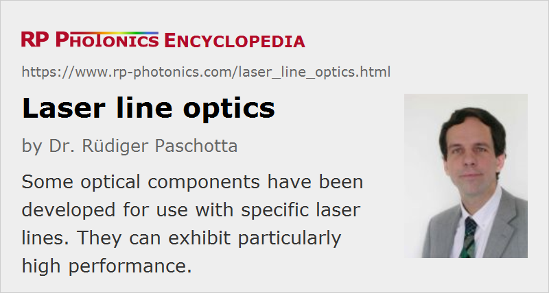

Laser Line Optics
Definition: optical elements made specifically for certain laser lines
More general term: optics
How to cite the article; suggest additional literature
Author: Dr. Rüdiger Paschotta
Various kinds of optical components have been developed for use with specific laser lines. This has led to the term laser line optics, or more specifically to terms like laser line mirrors, laser line polarizers, etc.
Frequently, the restriction to certain operation wavelengths (more precisely, certain limited wavelength regions) arises from limitations of dielectric coatings, which intrinsically have wavelength-dependent reflection properties. For example, dielectric laser mirrors can achieve a high reflectivity (or some other defined reflectivity value, e.g. for beam splitters or output couplers) only in quite limited wavelength regions. The same holds for anti-reflection coatings and thin-film polarizers.
Although it is possible to make broadband coatings, which allow for substantially wider ranges of operation wavelength, those tend to be more complex and therefore more expensive. Further, narrowband coatings can exhibit a substantially better performance. Therefore, such coatings for narrow specific wavelength regions are often used when operation is anyway limited to such a region.
Certain wavelength restrictions also intrinsically apply to components like waveplates and birefringent tuners, further to various kinds of diffractive optics. Besides, there are certain optical filters, e.g. for blocking certain laser lines as required for applications like Raman spectroscopy.
Laser line optics are mostly available for a limited set of common laser wavelengths, for example:
- 1064 nm from Nd:YAG or Nd:YVO4 lasers
- 532 nm, 355 nm, 266 nm (harmonics of those, obtained by nonlinear frequency conversion)
- 514 nm (argon ion lasers)
- 633 nm (helium–neon lasers)
They include components like laser mirrors, polarizers, waveplates, beam collimators, beam shapers, optical filters and optical windows.
Suppliers
The RP Photonics Buyer's Guide contains 12 suppliers for laser line optics. Among them:
Questions and Comments from Users
Here you can submit questions and comments. As far as they get accepted by the author, they will appear above this paragraph together with the author’s answer. The author will decide on acceptance based on certain criteria. Essentially, the issue must be of sufficiently broad interest.
Please do not enter personal data here; we would otherwise delete it soon. (See also our privacy declaration.) If you wish to receive personal feedback or consultancy from the author, please contact him e.g. via e-mail.
By submitting the information, you give your consent to the potential publication of your inputs on our website according to our rules. (If you later retract your consent, we will delete those inputs.) As your inputs are first reviewed by the author, they may be published with some delay.
See also: laser lines
and other articles in the category general optics
|  |
If you like this page, please share the link with your friends and colleagues, e.g. via social media:
These sharing buttons are implemented in a privacy-friendly way!